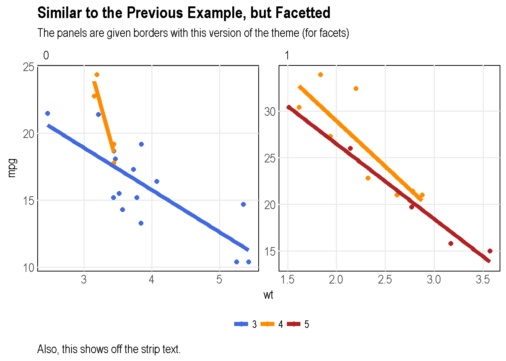

O:/_other/packages/teplot/README.md
tetext 
Notes
Here is a list of all functions in the package.
#> [1] "convert_state_abb_to_name" "create_map_state"
#> [3] "get_color_inv" "get_map_data_county"
#> [5] "get_map_data_county_tx" "get_map_data_state"
#> [7] "get_map_data_state_tx" "ggmap_stamen_tx"
#> [9] "ggmap_stamen_tx_raw" "scale_color_te"
#> [11] "scale_fill_te" "spdf_tx"
#> [13] "spdf_tx_precip" "te_colors"
#> [15] "theme_te" "theme_te_dx"
#> [17] "theme_te_facet" "theme_te_facet_dx"
#> [19] "theme_te_map" "tmap_tx"Examples
Here are some examples showing my custom theme and color palette.
library("teplot")
library("ggplot2")
library("datasets")
viz_cars <-
ggplot(data = mtcars, aes(x = wt, y = mpg, color = factor(gear))) +
geom_point(size = 2) +
geom_smooth(method = "lm", se = FALSE, size = 2)
# viz_cars + theme_grey()
viz_cars +
teplot::scale_color_te() +
teplot::theme_te() +
labs(title = "Yet another `mtcars` Example",
subtitle = "Just showing off the custom theme.",
caption = "And the custom colors.")
viz_cars_facet <-
viz_cars +
facet_wrap( ~ am, scales = "free")
# viz_cars_facet + theme_grey()
viz_cars_facet +
teplot::scale_color_te() +
teplot::theme_te_facet() +
labs(title = "Similar to the Previous Example, but Facetted",
subtitle = "The panels are given borders with this version of the theme (for facets)",
caption = "Also, this shows off the strip text.")
viz_diamonds <-
ggplot(data = diamonds, aes(x = clarity, fill = color)) +
geom_bar()
# viz_diamonds + theme_grey()
viz_diamonds +
teplot::scale_fill_te() +
teplot::theme_te_dx() +
labs(title = "How about them `diamonds`?",
subtitle = "Note that the major vertical gridlines are removed with this theme.",
caption = "Also, this shows off more of the range of colors in the custom palette.")
viz_diamonds_facet <-
viz_diamonds +
facet_wrap( ~ cut, scales = "free")
# viz_diamonds_facet + theme_grey()
viz_diamonds_facet +
teplot::scale_fill_te() +
teplot::theme_te_facet_dx() +
labs(title = "`diamond`, Facetted",
subtitle = "This version of the theme combines the modifications of the `_facet` and `_dx` versions.",
caption = "The vibrant colors still 'pop' off the page, even with a facetted plot.")
# viz_diamonds_facet + theme_grey()
# viz_iris + teplot::scale_fill_te(palette = "cool", discrete = FALSE) + teplot::theme_te()Here are some examples showing the map functions.
(Credit to https://journal.r-project.org/archive/2013-1/kahle-wickham.pdf for the data for the following example.)
library("ggmap")
crime <- ggmap::crime
ggmap_stamen_tx <- teplot::ggmap_stamen_tx
ggmap_stamen_tx +
geom_point(data = crime, aes(x = lon, y = lat), color = "red", size = 1)(Credit to https://mgimond.github.io/Spatial/interpolation-in-r.html for the data for the following example.)
library("tmap")
spdf_tx_precip <- teplot::spdf_tx_precip
spdf_tx <- teplot::spdf_tx
tmap::tm_shape(spdf_tx) +
tmap::tm_polygons(col = "white", alpha = 0) +
tmap::tm_shape(spdf_tx_precip) +
tmap::tm_dots(
col = "Precip_in",
# palette = "RdBu",
auto.palette.mapping = FALSE,
title = "Sampled precipitation \n(in inches)",
size = 0.7
)